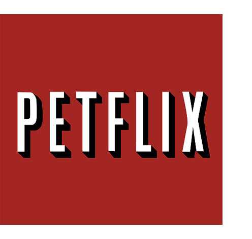

PETFLIX campaign is a series of posters created to encourage animal adoption for Bideawee organization. Our ultimate goal is to get people to adopt not shop.
Featured in: Ads of the World, ColoriBus,
BuzzFeed, UOL, Estadão, Curta Mais, Inspiring Life, Jetss, PetGuide, Cuteness,FireNewsFeed, UPSOCL, Froot, and Daily Blast Live.
Awards:
Graphis New Talent 2019
Top Dog Paw Award, Miami Ad School
Art Direction: Katy Huang
Graphic Design: Gabriella Vieira